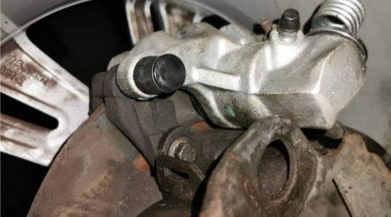

Quietschen oder Schleifen
Metallisches Schleifen heißt oft: Der Belag ist runter und drückt auf die Scheibe. Dann wird es teurer, je länger man wartet. Bitte zeitnah vorbeikommen.
Beläge, Scheiben, Bremsflüssigkeit, Leitungen, Handbremse: Wir prüfen die komplette Anlage und tauschen genau die Teile, die verschlissen sind. Nicht mehr.
Bremsen sind der einzige Bereich am Auto, bei dem wir nie sagen „das kann noch warten“, wenn es nicht stimmt. Umgekehrt tauschen wir aber auch keine Scheiben mit, nur weil die Beläge fällig sind.
Wir messen die Restdicke von Belägen und Scheiben und zeigen Ihnen die Werte. Daraus ergibt sich, was jetzt nötig ist und was noch eine Inspektion durchhält. Sie bekommen den Preis vorher – getrennt nach Vorder- und Hinterachse, damit Sie sehen, wofür Sie zahlen.
Häufig unterschätzt wird die Bremsflüssigkeit. Sie zieht Wasser aus der Luft und verliert dadurch an Siedepunkt – bei starker Belastung kann die Bremse dann weich werden. Deshalb gehört sie alle zwei Jahre gewechselt, unabhängig von der Laufleistung.

Beläge · Scheiben · FlüssigkeitErst prüfen, dann sprechen, dann schrauben. Sie erfahren vor Beginn, was gemacht werden muss, was es kostet und wie lange es dauert. Wenn etwas warten kann, sagen wir das – und wenn etwas dringend ist, ebenfalls.
Gearbeitet wird ausschließlich nach Ihrer Zustimmung. Kommt beim Schrauben etwas dazu, das wir vorher nicht sehen konnten, rufen wir Sie an, bevor wir weitermachen.
Metallisches Schleifen heißt oft: Der Belag ist runter und drückt auf die Scheibe. Dann wird es teurer, je länger man wartet. Bitte zeitnah vorbeikommen.
Ein Pedal, das sich schwammig anfühlt oder tiefer geht als gewohnt, deutet auf alte Bremsflüssigkeit oder Luft im System hin.
Zieht das Auto beim Bremsen zur Seite oder rubbelt das Lenkrad, sind meist Scheiben verzogen oder ein Sattel sitzt fest.
Das hängt stark vom Fahrprofil ab – Stadtverkehr verschleißt Beläge deutlich schneller als Landstraße. Grob liegen Vorderachsbeläge zwischen 30.000 und 70.000 km. Wir messen bei jeder Inspektion nach, damit Sie es früh wissen.
Nein. Entscheidend ist die gemessene Restdicke der Scheibe im Verhältnis zur Mindestdicke des Herstellers. Ist noch genug Material da und die Scheibe läuft rund, bleibt sie drin. Wir zeigen Ihnen die Messwerte.
Bremsflüssigkeit ist hygroskopisch, sie nimmt Wasser aus der Luft auf. Mit steigendem Wasseranteil sinkt der Siedepunkt – bei starker Bremsbelastung kann sich Dampf bilden und die Bremswirkung nachlassen. Deshalb der Wechsel alle zwei Jahre.
Kurzzeitig und vorsichtig meistens ja – aber nicht abwarten. Wenn es metallisch schleift, ist der Belag durch und beschädigt die Scheibe. Rufen Sie an, wir schauen zeitnah drauf.
Hauptuntersuchung und Abgasuntersuchung direkt bei uns im Haus – inklusive Vorabcheck, damit Sie beim ersten Anlauf durchkommen.
Mehr erfahrenReifenwechsel, Neureifen, Auswuchten, Reparatur und Einlagerung – für Sommer, Winter und Ganzjahresreifen.
Mehr erfahrenStoßdämpfer, Federn, Querlenker, Spurstangen, Radlager: Wir finden die Ursache für Poltern, Ziehen und schwammiges Lenkgefühl.
Mehr erfahrenRufen Sie an oder schicken Sie eine Anfrage – wir sagen Ihnen, wann es passt und was es kostet.